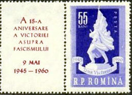
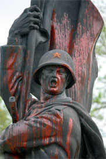
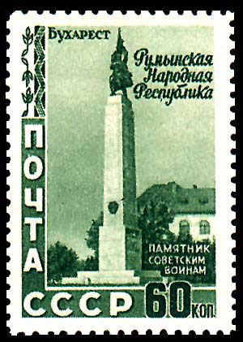
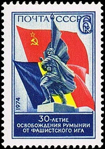
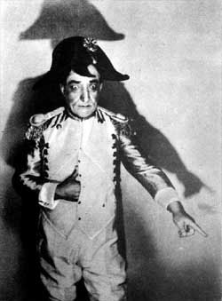
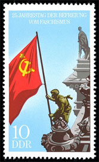

In his most famous artwork "The Persistence of Memory" the Spanish painter Salvador Dali associated the remembrance with some disquieting images of melting timepieces. There are these kind of nightmares that come to mind when recalling the hot month of August 1944 in Bucharest, the capital of Romania. It was the beginning of the Soviet occupation, the period from 1944 to 1958, during which the Soviet Union maintained a significant military presence in this country, reaching a peak of some 615,000 in 1946.

During their Eastern Front offensive of 1944, Soviet troops occupied Romania. The northwestern part of Moldavia was occupied through fighting from May to August, while Romania was still an ally of Nazi Germany. The rest was occupied after Romania changed sides in the war, as a result of the royal coup launched by King Michael on August 23, 1944. On that date, the King announced that Romania had unilaterally ceased all military actions against the Allied forces, had accepted the Allied armistice offer, and had entered war against the Axis Powers. Nevertheless the Red Army occupied most of Romania as enemy territory, like it did also with Bulgaria, a country that was never in war with the USSR.
Soviet authors, echoed by the 1952 Constitution of Romania, referred to the events of 1944 as the "liberation of Romania by the glorious Soviet Army". Most Romanian and Western sources use the term "Soviet occupation of Romania," some applying it to the whole period from 1944 to 1958. Source.
|
|


How does the Liberation appear on stamps? Like in many other capitals and cities of the occupied countries (Budapest, Vienna, Warsaw, Tallinn, etc.), statues that glorified the Soviet Army were erected in Romania too. The one that was put in the most visible place, in the Piata Victoriei of Bucharest, appeared on several Romanian stamps. The stamp above, left, was issued the October 20, 1948. On the label is written: "The Soviet Army is the one that respects the other nations... Stalin." We will exemplify below how did it respect them in Bucharest, and elsewhere. The stamp above on the right appeared on October 6, 1950, commemorating The Month of the Romanian-Soviet Friendship. This month ended the Nov. 7th, the anniversary day of the so-called Great October Socialist Revolution, the official name for the bolsheviks' October Coup of 1917, that brought the bolshevics to power, a change that started the Russian Civil War (death toll about 9 millions).
|
 |
 |

And the stamp series continues, ad nauseam, focusing on the same monument. August 21, 1954. Issue: "10 years since Liberation"; May 9, 1960. Issue: "15th anniversary of the victory against the fascism." In the next commemorative year, that of 1965, the statue doesn't appear on stamps anymore, being replaced by some symbolic stuff.
 |
 |
 |
The "liberator" didn't forget the event and the statue either. The USSR issued in 1952, in 1974 and in 1984 the same symbol of that endless liberation. It is interesting to notice that the Soviet flag, appeared on the stamp of 1974, disappeared from the stamp appeared in 1984.
In 1970 the infamous statue was moved from the Piata Victoriei to the periphery of Bucharest (see the above picture of it). Even being located there, the statue won't escape the rage of the population, who covered it in 2009 with bloody red stripes, bringing to it some modern expressiveness, that symbolically enhances this realistic socialist work of art. Source
After having displayed the official propaganda contribution, let's give speech to two witnesses, that probably (no proofs...) were victims of the self-proclamed Liberators and of their followers and accomplices of the Romanian communist party, who became for a long time after that the unforgiving rulers of the country.
 Constantin Tãnase as Napoleon |
Constantin Tanase (July 5, 1880 - August 29, 1945) was a Romanian actor and writer for stage, a key figure in the revue style of theater in Romania. It is rumored that he was killed by the invading Red Army, as reported in the following account. Tanase was still performing in Bucharest a year after the arrival of the Russians, and was killed for satirizing the Red Army soldiers' habit of "requisitioning" all personal property in sight, in particular of taking people's watches, demanding them by saying, "Davai ceas" (davai - Russian for "Give me", and ceas - Romanian for "watch"; in Russian very similar: chasy). Tanase made up a verse:
It was bad with "der, die, das" After several performances he was arrested, threatened with death, and told not to perform the sketch again. However, Tanase was not a man to be intimidated. At the next performance, he came on stage in a giant overcoat, with his arms festooned in watches. The audience applauded wildly as he simply stood there. Then he opened the overcoat, revealing a pendulum clock. Pointing to it, he said "El tic, eu tac, el tic, eu tac" (punning on tic-tac, the Romanian equivalent of "tick-tock", but also meaning "It ticks, I am silent, it ticks, I am silent"). Two days later he was found dead. Source |
Among the eyewitnesses to the events of 1944 was Mihail Sebastian (October 18, 1907 - May 29, 1945), a famous Romanian playwright, essayist, journalist and novelist. In his diary (Journal, 1935-1944: The Fascist Years), he described the atmosphere in Bucharest at the time, as follows: "Bewilderment, fear, doubt. Russian soldiers rape women (as Dina Cocea was saying yesterday). Soldiers stop cars, let the driver and passengers out, get behind the wheel, and take off. Stores looted. This afternoon, at Zaharia, three of them broke in the safe, taking watches. (The watch is the toy they like the best.)". Sebastian died in a tram accident just weeks after the Soviet Army occupied Romania. Source.
The case of Romania wasn't, unfortunately, singular. "The Liberators" acted the same way in all countries, following Stalin's directive: We should step foot into the pride of the German nation. The now widely known result was the rape of over a million of German women by the Soviet soldiers in East Germany. Source
An entire program, that meant deportations, raping, and yes, looting of watches, like so clearly (even if involuntarily) displayed on the picture that went around the world, that of the conquest of the Reichstag. The famous photo of the two soldiers planting the flag on the roof of the building is a re-enactment photo taken the day after the building was taken. However, to the Soviets the event, as represented by the photo, became a symbol of their victory, demonstrating that the Battle of Berlin, as well as the Eastern Front hostilities as a whole, ended with the total Soviet victory.

Just that the symbolism speaks in the same time about a well concealed, hard reality. Please take a look at the wrists of the soldier who helps the other one to stay in balance. The natural question that arises is: What the hell do you needed, sergeant Egorov (who was awarded for his contribution an official hero title) two watches? The postal administration of the then communist Germany (DDR) answered later this question by totaly removing the watch "collector" from the scene (see below, on the right, the stamp issued on May 5th, 1970). I did justice to Egorov, by overprinting the monument on the Romanian stamp issue (the stamp below, in the middle) with the image of the real "hero", climbing the Romanian commemoration statue.
|
|
|
 |
THE
SOVIET ARMY IS THE ONE THAT |


The readers of this article know now why the glorious image has to be "improved" by the German designer. They know also more about the alleged heroes and the real victims of the so-called "liberation of Romania by the glorious Soviet Army", a military operation that has established an oppressive communist regime, that could be overturned by the Romanians only 45 years after the described events.
Link: Romania in WWII
| Created: 07/16/2010.
Revised: 12/17/2018. Copyright © 2010 - 2018 by Victor Manta, Switzerland. All rights reserved worldwide. |